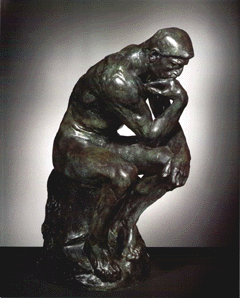
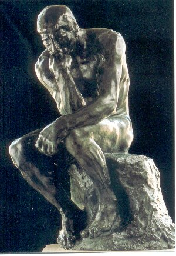

"What makes my Thinker think is that he thinks not only with the brain, with his knitted brow, his destended nostrils, and compressed lips, but with every muscle of his arms, back, and legs, with his clenched fist and gripping toes."
- Auguste Rodin

Many people have mis-conception about real man behind Rodin's creation - "TheThinker". Some people erroneously think it could be a famous
philosopher, perhaps Plato, or even Nietzsche's Superman; But Nietzsche was
unknown to the world when Rodin created The Thinker, and Plato wasn't
even close. Some in their wildest thought wish to conclude that it might be the young Brando
[~ American actor widely known for his film appearances, most notably as Stanley
Kowalski in A Streetcar Named Desire] in one of his heavy
sessions at the Actors Studio, all naked and angst ridden, doing a philosopher
manqué: "I could have been a think -er."
Well, the historical fact of "man behind the thinker" revealed by Joseph
Phelan is, The Thinker was originally meant to be
Dante in front of the The
Gates of Hell, pondering his great poem. Dante as a voluptuous naked
male may seem absurd to those who think of the images painted in his time and
after, but Dante's head does bear some resemblance to the profile of The
Thinker.

Why is The Thinker naked? Because, according to Phelan, Rodin
wanted a heroic figure à la Michelangelo to represent Thinking as well
as Poetry.
Rodin himself wrote about the "thinker" story:
The Thinker has a story. In the days long gone by I conceived the idea of the Gates of Hell. Before the door, seated on the rock, Dante thinking of the plan of the poem behind him... all the characters from the Divine Comedy. This project was not realized. Thin ascetic Dante in his straight robe separated from all the rest would have been without meaning. Guided by my first inspiration I conceived another thinker, a naked man, seated on a rock, his fist against his teeth, he dreams. The fertile thought slowly elaborates itself within his brain. He is no longer a dreamer, he is a creator.
The work of Rodin echoes with the great aspirations of the 19th century, the century of Darwin, Marx and Wagner. But in his equation, The Thinker = the Poet = the Creator, Rodin was way ahead of his time. The greatest German Philosopher of the 20th century, Martin Heidegger, only began to formulate this equation in the 1930's in such works as "The Thinker as Poet", "What are Poets For?" and "...Man Dwells Poetically". Nowadays the sculpture is quite adorable to all humanities departments, repeated endlessly by numerous art-loving free-thinking people.
[ About Rodin : Francois Auguste Rene Rodin grew up in Paris, France. He wanted to be an artist, but he could never get accepted into the great art school in Paris. He finally joined a monastery where his abbot recognized his talents and encouraged him to become a sculptor. Riodin's innovative, sometimes controversial works include the lifelike Bronze Age and the uncompleted series Gates of Hell, comprising some of his best-known works in his age, such as The Kiss and The Thinker. Readers are requested to visit the following site if they find interest more on Rodin : http://www.artcyclopedia.com/artists/rodin_auguste.html ]
Many of our members do not know that Mukto-mona banner was actually constructed focusing on Rodin's prestigious work.
References: 1. Art Encyclopedia 2. Musée Rodin, Paris.
===================================================
Cross-posting courtesy: www.mukto-mona.com
{kind=link}